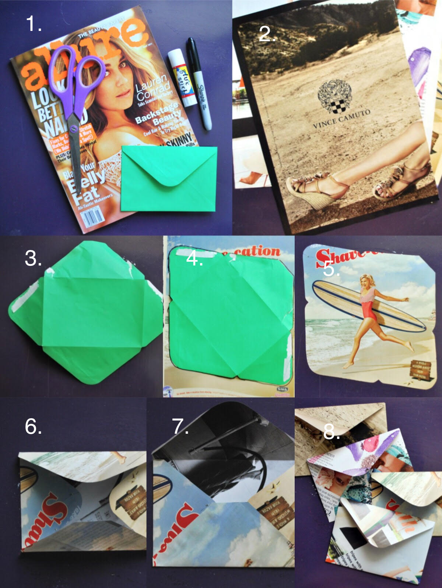
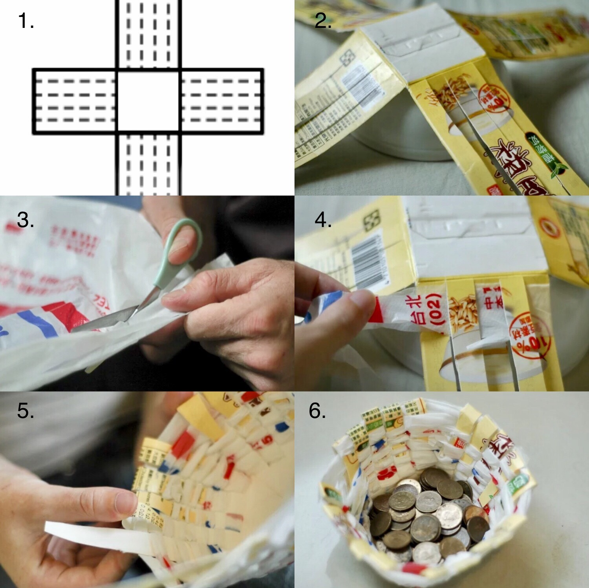
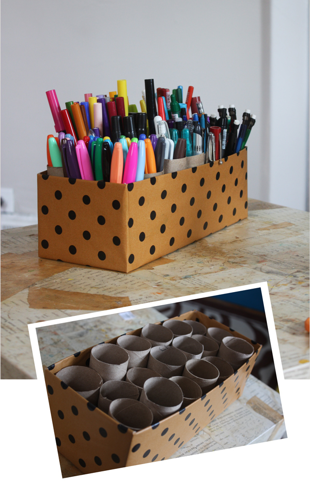
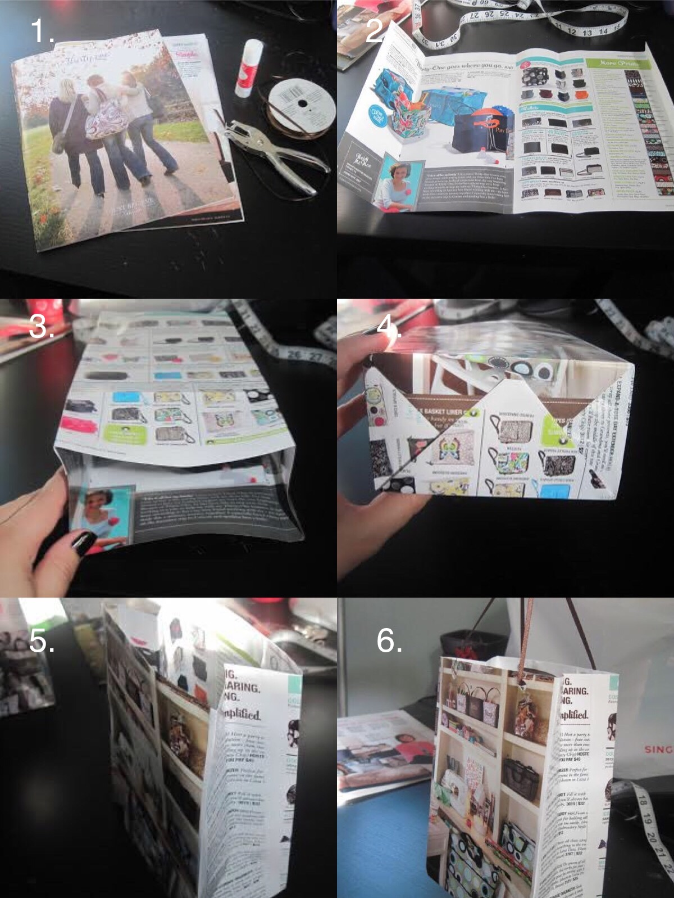

DIY Ideas for Paper Recylables
1. Magazine Envelopes

Tools Needed:
- Scissor
- Magazine
- An envelope
- Glue
- Sharpie
Instructions:
- Tear off the page that has the design you'd like
- Unfold the made envelope
- Trace out the flat pattern onto the teared page
- Fold it from all four sides as shown in step 6 of the image
- Glue the bottom flap down into the two sides
- Fold the top flap, but do not glue it until it's ready to use
2. Weave Carton

Tools Needed:
- Any paper carton or cardboard boxes
- Plastic bag or newspaper
- Scissor
Instructions:
- Cut the carton into the pattern shown in step 1 of the image
- Cut each flap into five ¾" (20 mm) sections
- Cut the flatten plastic ot newspaper into long strips that's about 1 inch in width
- Flip the carton so that the back is facing up
- Weave the plastic bag like step 4 of the image and continue to weave it until it appears like a basket
3. Stationary Caddy

Tools Needed:
- Used shoe box or empty tissue box
- Toilet paper roll
- Glue
- Pattern papers or construction papers
Instructions:
- If it's a tissue box, cut off the entire top
- Wrap the pattern paper around the box and glue it
- Glue the toliet paper rolls onto the box and try to fill in all the space
4. Gift Bags

Tools Needed:
- Magazine or newspaper
- Ruler
- Glue
- Strings or ribbons
- Hole punch
Instructions:
- Take out staples (if using magazines) and pick out the pages you want to use
- Make a few folds:From the left, 3 inches, 5 inches, 3 inches and 5 inches.
- Fold the left over on the right
- Adjust the measurements according to your paper size as long as the two smaller folds and two larger folds are the same
- Fold the top ¾ in and bottom 2.5 inch
- Put glue on the smallest flap (rightmost) and the top flap.
- Lay the right flap over the left flap so a tube is formed. Fold the top flap in the bag (this is the opening of the bag)
- Fold the bottom like you are wrapping a present and use glue to keep the flaps together
- Punch 2 holes in each side of the bag and string some ribbon or whatever through. Secure with a knot at the ends.